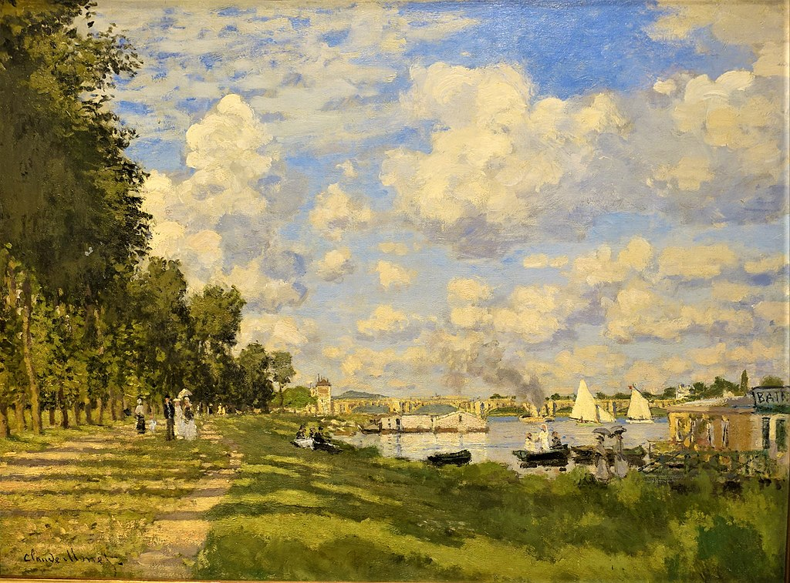

<head>
<meta charset="UTF-8" />
<meta name="keywords" content="drawing, painting" />
<meta name="description" content="drawings by Sunjy" />
<title>Sunjy</title>
<link rel="shortcut icon" type="image/x-icon" href="../../mImages/mCommon/favicon.ico" media="screen" />
<link rel="stylesheet" type="text/css" href="../../mCsses/mCommon/mCssA.css" />
<link rel="stylesheet" type="text/css" href="../../mCsses/mCommon/mCssB.css" />
<link rel="stylesheet" type="text/css" href="../../mCsses/mCommon/mCssC.css" />
<link rel="stylesheet" type="text/css" href="../../mCsses/mCommon/mCssD.css" />
<link rel="stylesheet" type="text/css" href="../../mCsses/mContent/mCssA.css" />
<link rel="stylesheet" type="text/css" href="../../mCsses/mContent/mCssB.css" />
<link rel="stylesheet" type="text/css" href="../../mCsses/mContent/mCssC.css" />
<link rel="stylesheet" type="text/css" href="../../mCsses/mContent/mCssD.css" />
</head>
<script type="text/javascript" src="../../mScripts/mContent/mContentAA.js" /></script>
<script type="text/javascript" src="../../mScripts/mContent/mContentAB.js" /></script>
<script type="text/javascript" src="../../mScripts/mContent/mContentAC.js" /></script>
<script type="text/javascript" src="../../mScripts/mContent/mContentAD.js" /></script>
<script type="text/javascript"></script> 
<script type="text/javascript">
document.write('<div class="mImgAbsolute"></div>');
/*
document.write('<p class="mFontSizeBColor" />From a white paper...</p>');
document.write('<table class="center"><tr><td>');
document.write('');
document.write('</td></tr></table>');
*/
</script>


<script type="text/javascript">
document.write('<p class="mFontSizeBColor" />The Basin at Argenteuil</p>');
document.write('<p class="mFontSizeSColor" />By Claude Monet. “The Basin at Argenteuil” was painted during the period when he lived in Argenteuil, from December 1871 until 1878. Monet painted outdoors, and he would set up his easel out in the countryside or his garden. He would then carefully reworked the details of his canvases in his studio.<br><br>In his painting with the light and vivid colors, Monet shows his mastery of the technique of fragmented brush strokes to produce an interplay of luminous vibration. The left of the painting is dominated by the shadows of the trees planted along the Argenteuil promenade. However, the significant part of the picture is given over to clouds moving across the blue sky.<br><br>This painting represents the start of a productive series of works while he stayed at Argenteuil, as Impressionism reached its peak during the Argenteuil period. Monet wrote later in life:<br><br>“My only merit lies in having painted directly in front of nature, seeking to render my impressions before the most fleeting moments.” <br><br>This painting is one of over seventy works Monet painted of the Seine River in Argenteuil. It combines favorite themes of leisurely figures strolling, boating, and bathing together with backdrops of bridges and landscape features.</p>');
document.write('<table class="center" /><tr><td>');
document.write('<br>In his painting with the light and vivid colors, Monet shows his mastery of the technique of fragmented brush strokes to produce an interplay of luminous vibration. The left of the painting is dominated by the shadows of the trees planted along the Argenteuil promenade. However, the significant part of the picture is given over to clouds moving across the blue sky.<br><br>This painting represents the start of a productive series of works while he stayed at Argenteuil, as Impressionism reached its peak during the Argenteuil period. Monet wrote later in life:<br><br>“My only merit lies in having painted directly in front of nature, seeking to render my impressions before the most fleeting moments.” <br><br>This painting is one of over seventy works Monet painted of the Seine River in Argenteuil. It combines favorite themes of leisurely figures strolling, boating, and bathing together with backdrops of bridges and landscape features." />');
document.write('</td></tr></table>');
</script>


